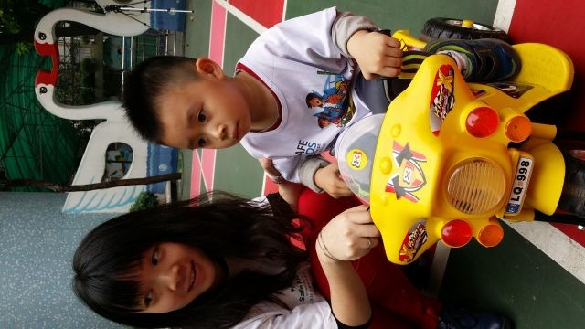
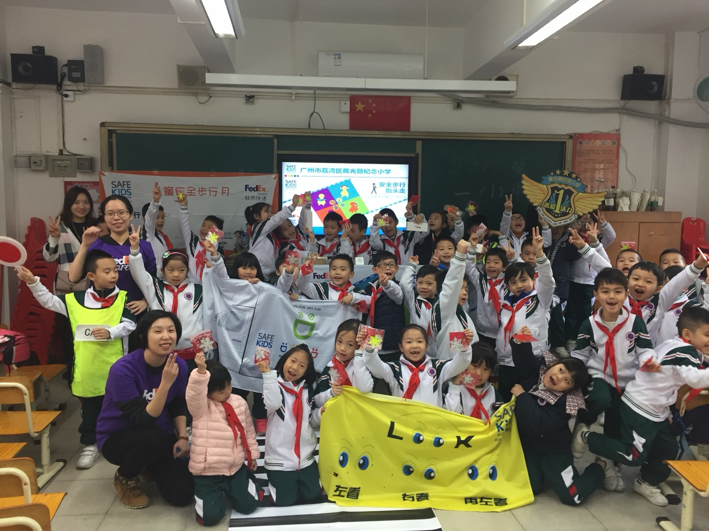
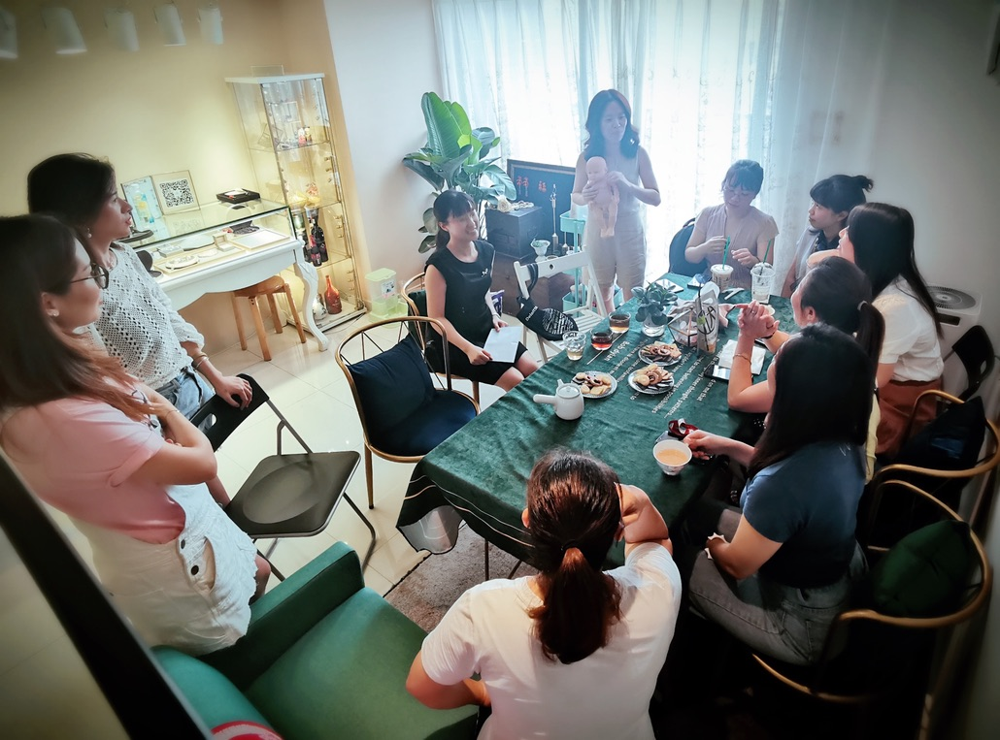
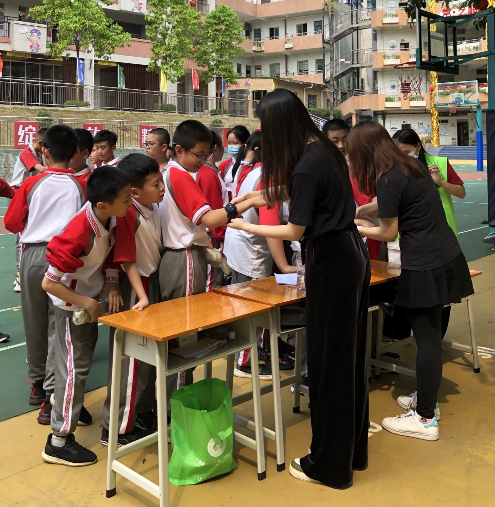

🚸 儿童安全活动
活动走进幼儿园、小学，面向低龄儿童开展趣味安全启蒙，同时面向全社会志愿者开放参与。我作为组织者，摒弃传统说教式安全教育，以道具、游戏、竞赛为载体，让枯燥的安全知识变得好玩、好记、好用。

这是我落地的首场儿童安全启蒙公益活动。我和志愿者团队一起，精心制作各类趣味精美道具，彻底摒弃刻板的课堂说教，用沉浸式互动的方式，带领孩子轻松学会过马路三步法，掌握基础的出行安全规则。
低龄孩子的认知特点是"重体验、轻道理"，但大多数成年人习惯性用命令式语言管控孩子，只会说"不许乱跑、不许乱闯"，却从未耐心告诉孩子"为什么不安全、应该怎么做"。我在本次活动中，把成人眼里简单的安全规则，翻译成孩子能看懂、能记住的趣味体验，让孩子在玩耍中主动吸收安全知识。
对参与的志愿者而言，这场活动也是一次深刻的认知更新。很多志愿者原本以为儿童安全教育只是"教孩子知识"，参与后才明白，低龄孩子的教育核心是沟通方式的适配。大家在互动中慢慢读懂，孩子的调皮、好动，不是不听话，而是认知方式和大人完全不同。这场活动让所有参与者学会换位思考，放下成人的固有傲慢，更温柔、更耐心地理解低龄儿童。

凭借首场幼儿园安全活动的良好口碑与成熟模式，本次活动由幼儿园主动邀约落地。我沿用成熟的活动体系，志愿者团队妥善保存、迭代优化往期趣味道具，将成熟、优质的公益模式持续复制推广，让更多低龄孩子受益。
本次活动最大的价值，是让各行各业的志愿者在公益实践中完成自我提升。很多参与的青年、职场志愿者反馈，通过筹备活动、互动带娃、现场讲解，自己的陌生人沟通能力、活动组织能力、临场应变能力得到了极大锻炼。
更重要的是，大家对"儿童沟通"有了全新的理解：和孩子相处，不是靠权威压制，而是靠适配孩子认知的耐心引导。
我始终坚持，儿童公益不止是赋能孩子，更是滋养每一位参与的成年人。每一次和孩子真诚互动的过程，都是成年人自我反思、自我成长的过程，让更多人学会理解孩子、包容孩子、温柔对待孩子。

本次活动我将成熟的幼儿园安全启蒙模式，全新迭代落地小学一年级场景。小学生已经掌握基础安全常识，对简单说教产生审美疲劳，自主意识、独立思考能力更强。为此我全新升级活动形式，放弃单一讲解，采用「互动游戏 + 小组竞赛」的模式，充分调动孩子的主动性与参与感，让孩子主动思考、主动学习。
本次活动我特别邀请学校家委会成员共同参与组织，让家长全程沉浸式观察孩子的课堂表现、思考方式、互动状态。很多家长参与后深受触动，以往在家中，自己习惯用权威姿态管控孩子，认为孩子年纪小、没有主见，只会被动听话。但在集体活动中，家长第一次看见孩子独立思考、大胆表达、积极参与的成熟一面。
不少家长坦言，这场活动彻底改变了自己的育儿沟通方式，不再一味命令、管控、指责，而是学会平等对话、耐心倾听、尊重孩子的想法。我作为组织者，通过一场安全活动，悄悄完成了亲子沟通模式的升级：让家长看见真实的孩子，让孩子拥有被尊重的沟通体验。

本次活动我聚焦家庭应急安全短板，专门面向家长与成年志愿者群体开设儿童急救专场。我特邀三甲医院新生儿科医生亲临分享，把专业、严谨、晦涩的儿童急救知识，翻译成普通家庭能听懂、能上手、可实操的居家应急技能。
很多成年人平时只关注孩子的出行安全，却忽略了居家突发意外的应急处理能力，遇到孩子受伤、不适容易慌乱无措。
本次活动让所有参与的成年人收获满满，大家系统掌握了基础儿童急救方法，缓解了育儿焦虑，明白了安全守护不止是"禁止危险"，更是"拥有应对危险的能力"，以更从容、更专业的姿态守护孩子成长。

本次活动我面向小学中高年级青少年开展，聚焦青少年自我保护、心理边界、人际防护核心主题。这个年龄段的孩子自主意识快速觉醒，独立活动范围变大，但自我保护意识薄弱、边界认知模糊，遇到困扰习惯沉默隐忍，不愿和长辈沟通，极易形成安全隐患与心理隔阂。
我结合青少年心理特点，摒弃低龄化趣味科普，采用案例讲解、情景模拟、互动答疑的成熟模式，引导孩子认识自我边界、学会自我保护、懂得主动求助。
青少年的安全不止是人身安全，更包含心理安全与人际边界。很多家长参与后意识到，孩子的沉默、叛逆、回避，往往是不懂求助、缺乏安全感的信号，让自己后续更注重和孩子的深度沟通与情绪关注。
在儿童安全系列活动中，我作为安全认知与亲子沟通的双向翻译官：
• 把「生硬的安全规则」翻译成孩子愿意主动吸收的游戏与体验
• 把「成人的权威管控」翻译成平等尊重的陪伴沟通
• 把「单一的安全科普」翻译成两代人的认知同频，让守护不止有规则，更有理解与温度